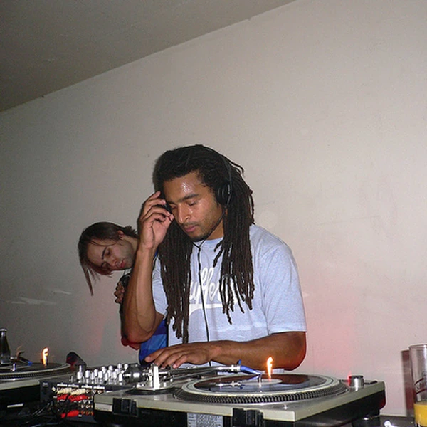

UK Garage is a British form of Electronic Dance Music that developed during the 1990s by reshaping American Garage House for a different club culture. It combines a strong bassline with drums that often shuffle around the beat rather than landing in a perfectly even pattern. Vocals are common, sometimes sung in a style influenced by R&B and sometimes cut into short rhythmic fragments. The music can have a steady House pulse or the more irregular rhythm associated with 2-Step Garage. Both approaches belong to the wider UK Garage tradition. Its sound grew through clubs, pirate radio and independent records, particularly in London, before reaching a much larger audience. That commercial success did not make the underground scene disappear. UK Garage remained connected to the DJs and local communities that developed it, and parts of its musical language later helped shape Grime and Dubstep.
The Garage part of the name originally referred to an American dance music tradition associated with the Paradise Garage nightclub in New York. Garage House developed around soulful dance records, with vocals and a warmer feel than some other forms of House. When British DJs began playing and adapting that music during the 1990s, the local versions grew faster and more bass-heavy. The UK was added to distinguish this new scene from its American influence. It is a practical name, although the music soon developed far enough to make that simple geographical label less helpful than it sounds. Speed Garage described harder and quicker tracks with prominent bass, while 2-Step Garage referred to rhythms that left spaces between the main drum hits. The terms are related, but neither represents every part of UK Garage. Genre naming rarely keeps pace with a busy dance floor.
UK Garage developed in British clubs during the first half of the 1990s as DJs introduced American Garage House records to audiences already familiar with House, Jungle and other fast dance music. The records were often played at higher speeds, and local producers began making tracks with heavier bass and sharper drums. By the second half of the decade, Speed Garage had established a recognisable sound, while 2-Step Garage introduced a more skipping rhythm that left greater space for vocals and MCs. Pirate radio and independent labels helped these developments travel quickly between neighbourhoods and cities. Around the turn of the millennium, UK Garage crossed into the mainstream and became a major part of British Pop. That visibility was followed by hostile coverage of parts of the scene and changing tastes within dance music. Meanwhile, producers and MCs were developing darker and more stripped-back approaches that contributed to Grime and Dubstep. UK Garage never really vanished, although the industry occasionally behaved as though a style stops existing once it leaves the charts.
UK Garage is built around drums with a noticeable shuffle, a strong low end and an important role for vocals. In its more House-influenced forms, the kick lands regularly on each beat, but the percussion around it adds a loose, swinging feel. In 2-Step Garage, producers remove some of those kicks and move the accents around, creating a rhythm that seems to skip forward. Basslines often occupy the spaces left by the drums, giving the music its weight without filling every moment. Vocal parts may be sung in full phrases or chopped into tiny fragments that become part of the rhythm. MCs also became an important part of live sets and pirate radio broadcasts. Many tracks balance polished melodies with rougher bass sounds, and that tension is part of the genre's identity. UK Garage can sound smooth on the surface while being rhythmically quite restless underneath. The drums usually tell you more about it than the production's level of polish.

UK Garage offered a new outlet for Black British musical culture while bringing together audiences whose tastes did not fit neatly into the categories used by mainstream radio. It drew on American House but took much of its character from British Caribbean sound-system traditions, pirate broadcasting and local club life. DJs and MCs could develop a following without the usual industry backing, and the scene helped establish opportunities for young performers and independent labels. When UK Garage reached the charts, it showed that music developed largely outside established broadcasters could become a defining part of British Pop. The welcome was not always uncomplicated. Parts of the scene faced sensationalised reporting about violence, and the pressure to become commercially acceptable affected who received attention. Yet the musical ideas did not disappear with the headlines. UK Garage helped lay foundations for Grime and Dubstep, and its influence remains present in British dance music. The industry has often preferred the finished product to the communities that made it possible. UK Garage is a useful reminder that those communities were the point.